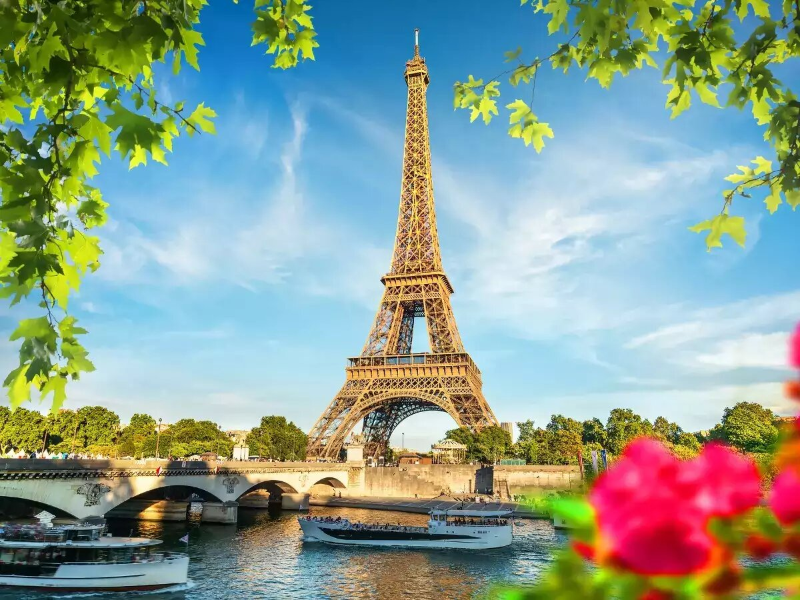
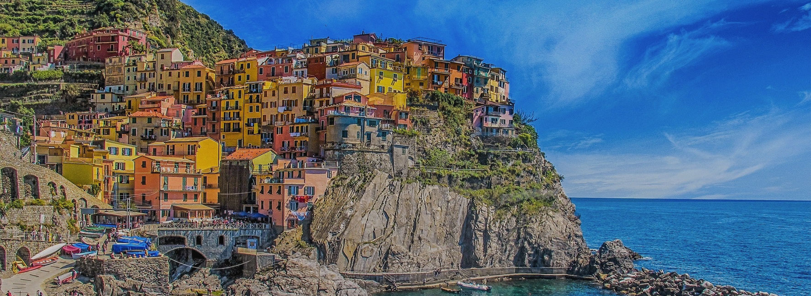
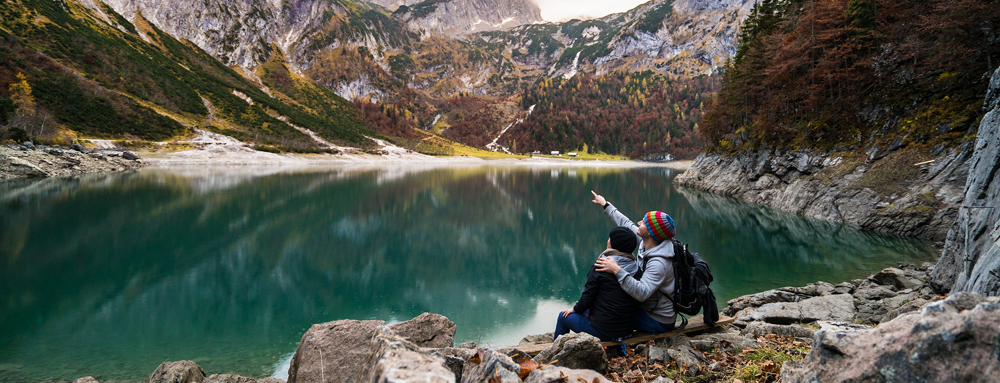
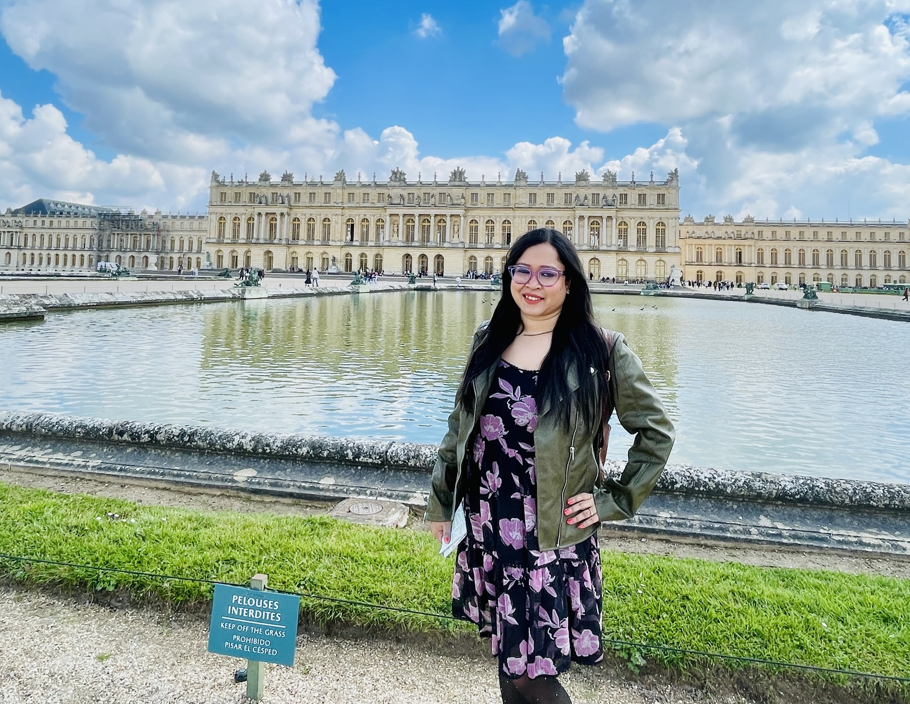
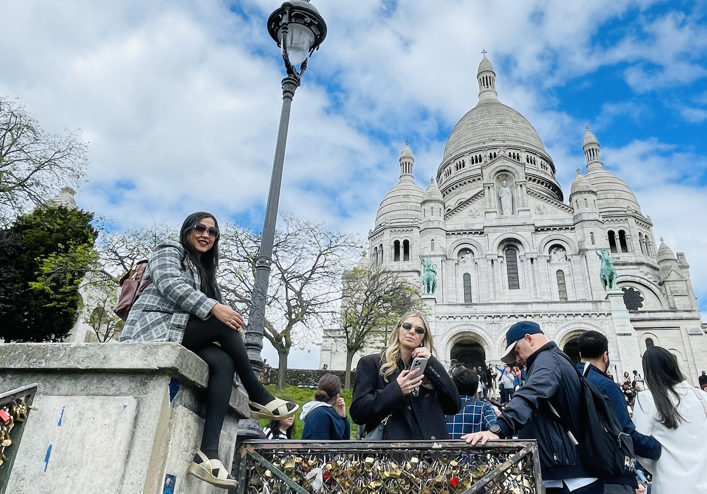
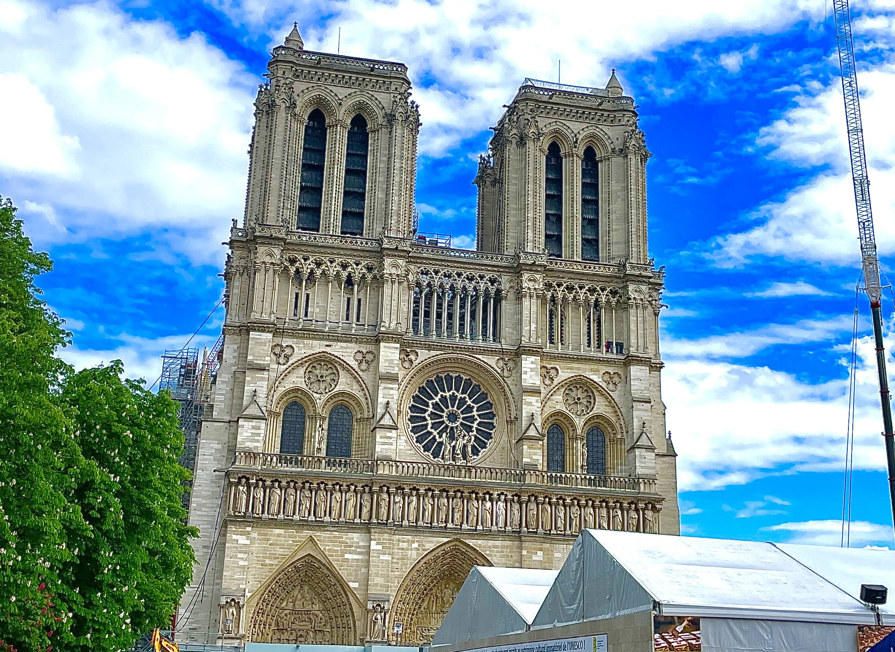
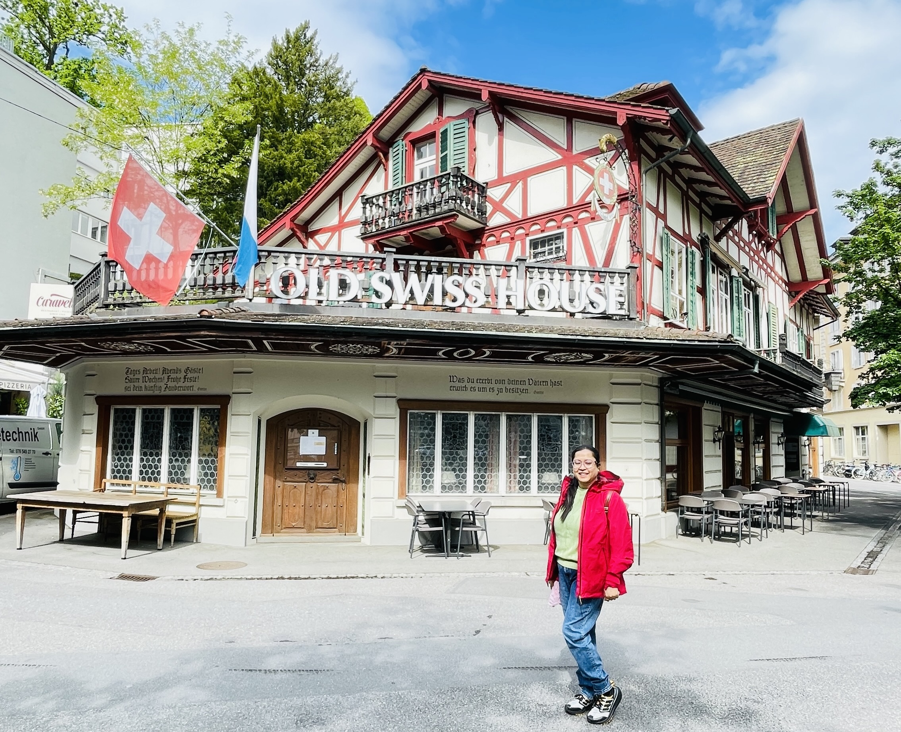
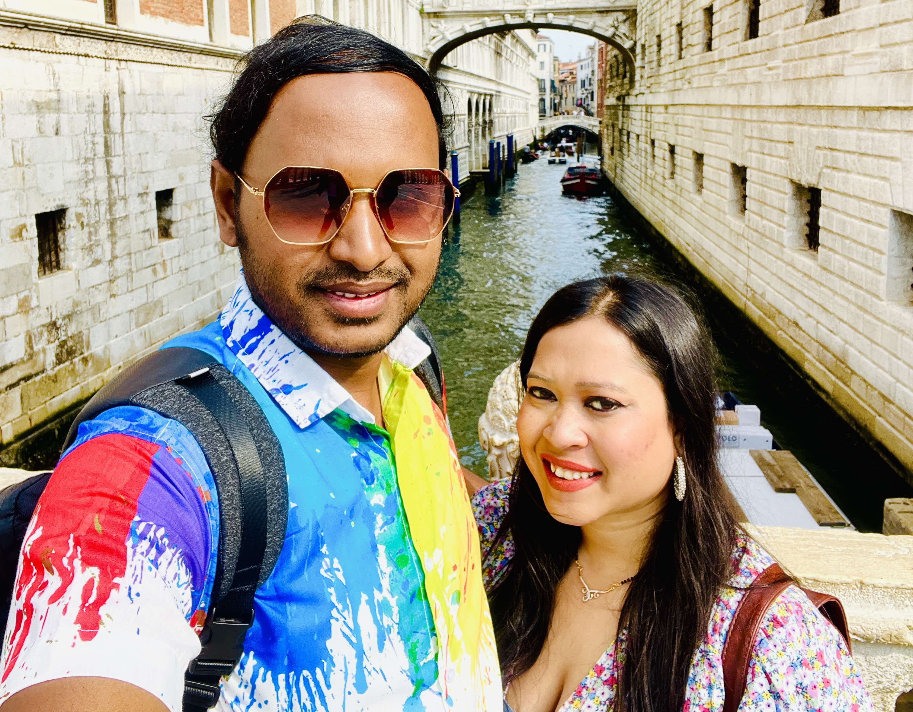

France
Bonjour Paris 🗼
The City of Love where the Seine, cafés, and boulevards frame a dreamlike first arrival.
Read article →


Travel Journal
A curated diary of quiet streets, monumental architecture, warm cafés, and meaningful moments from France, Switzerland, and Italy.
Featured essays

The City of Love where the Seine, cafés, and boulevards frame a dreamlike first arrival.
Read article →
An immersive walk through French royal history, gilded halls, and expansive gardens.
Read article →
Panoramic views, street performers, and the white domes of Sacré-Cœur above Paris.
Read article →
A reflection on resilience, Gothic grandeur, and the historical heart of Paris.
Read article →
Lake reflections, alpine horizons, and old-town charm in central Switzerland.
Read article →
A floating city of bridges, palazzos, and stories that unfold on quiet waterways.
Read article →About this blog
Travel the Horizon was built as a personal archive of Europe trips—covering where to stay, what to prioritize, and how each destination felt beyond the checklist.
Connect on LinkedIn